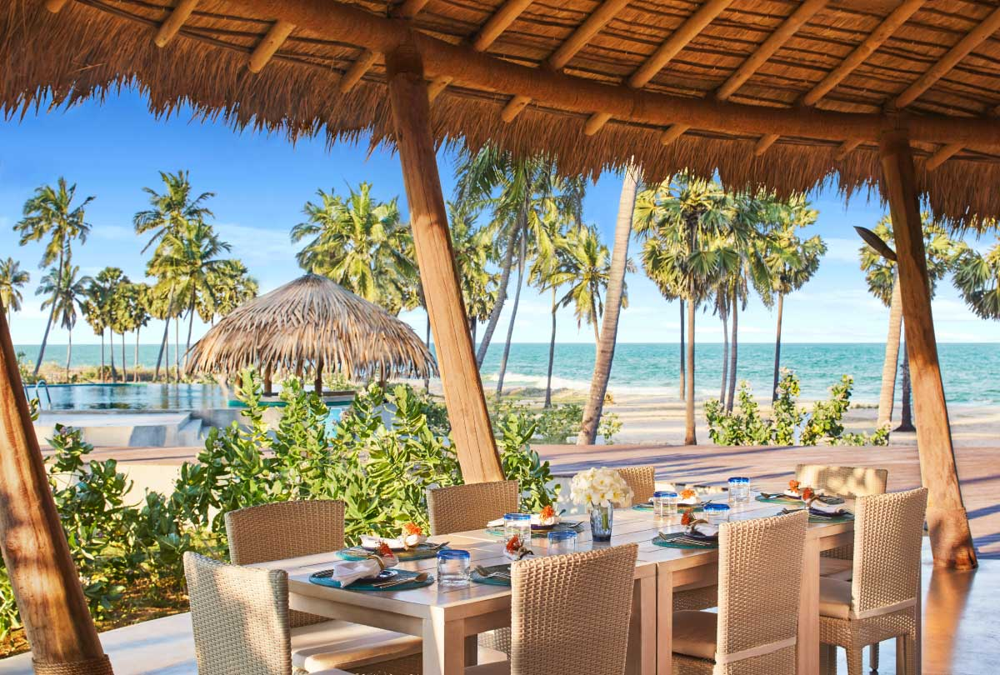
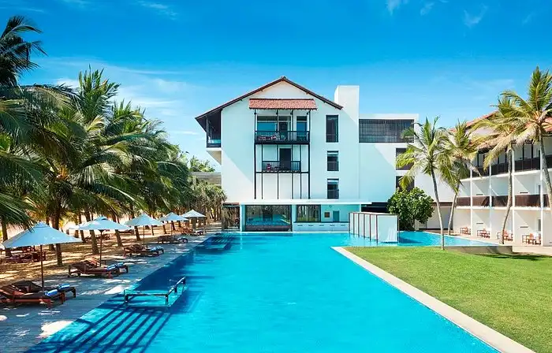
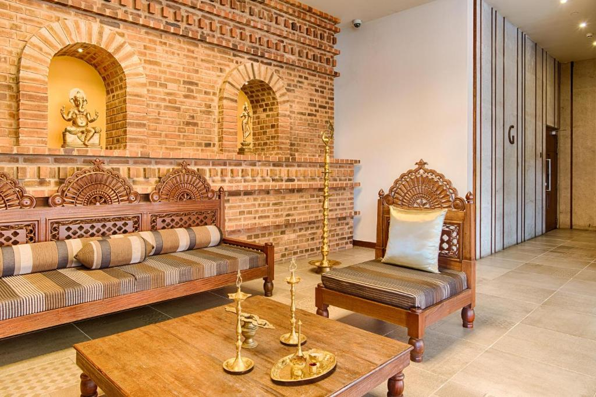
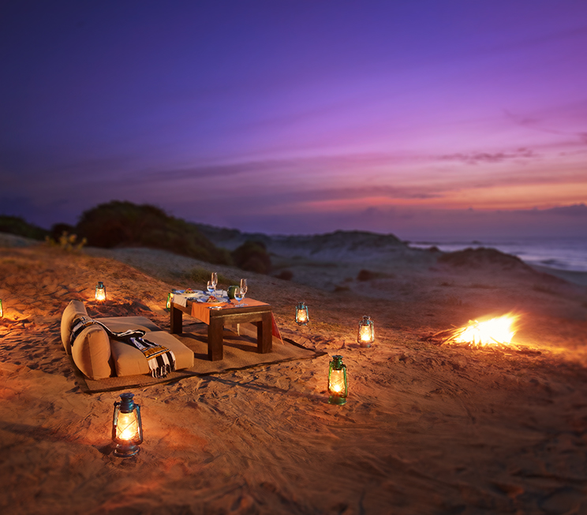
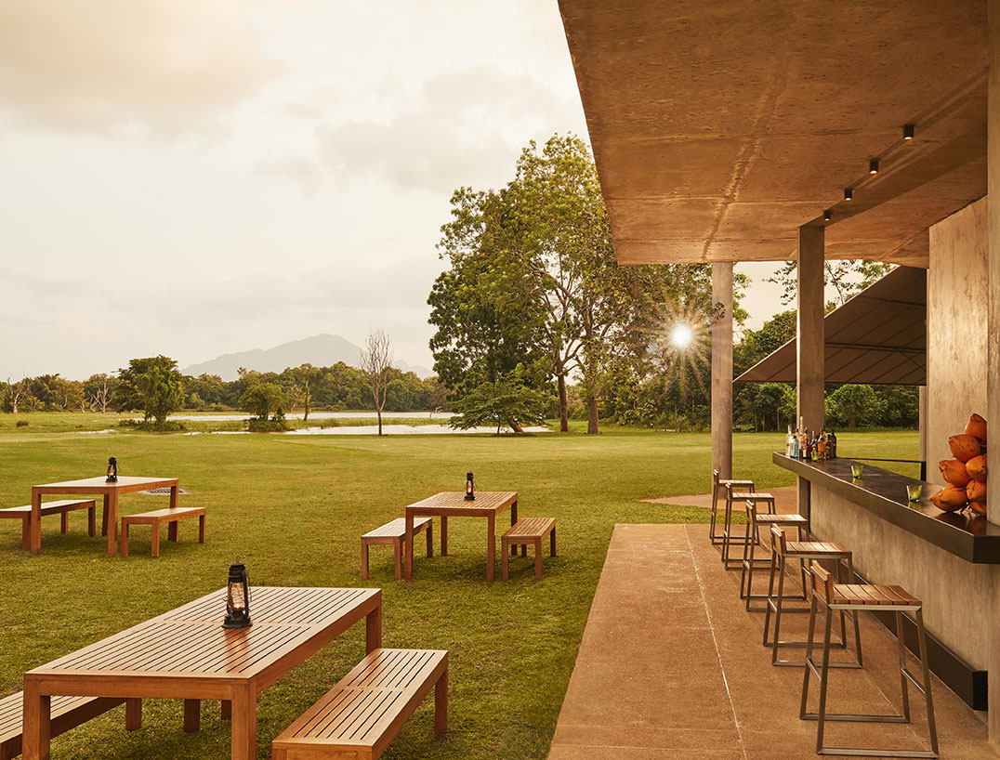

Spread across the length and breadth of our tropical island, our homes of Sri Lankan hospitality invite you to indulge in our signature brand of luxury, brought to life with the strength of our well-rooted family values. No matter where you may find yourself in Sri Lanka, our doors will always be open.
Nurtured over generations, this innate sense of warmth and care welcomes you to a variety of enchanting landscapes that inspire our hotels in Sri Lanka. Originating from the birthplace of our hospitality on the shores of Negombo, we have since extended our family to all sides of the island in order to bring you the finest of Sri Lankan hospitality.
From the land of our founder’s home in the capital of Colombo, we bring you urban novelty built on family heritage. And as we travel down the ever-popular southern coastline, you have the choice of many sunny settings, including a secluded cove and a magnificent hillock. The deep south then brings you closer to the wild, as we enter uncharted territory that extends to the pristine shores of our untouched east coast, while the top of our teardrop-shaped isle features the great northern peninsula – rich in colourful history that is rivaled only by the ancient kingdoms of our cultural triangle and the colonial legacies of our central highlands. Through the hundreds and thousands of stories that fuel the magic of our land, our many homes welcome you to share in the legendary comforts of our Sri Lankan hospitality.
In addition to a host of contemporary facilities and services that complement your modern lifestyle, nearly each and every one of our hotels is committed to a number of sustainable initiatives that have made us an icon of responsible tourism in the region. Championing a harmonious coexistence of community and environment, our homes of Sri Lankan hospitality not only preserve and protect, but also harness the immense potential of our people and natural resources to deliver unforgettable holiday experiences on this vibrant isle.

Situated mere minutes away from the world-renowned surfing hotspot of Arugam Bay, Jetwing Surf welcomes you to the waves of Pottuvil on the uncharted eastern coastline of Sri Lanka. Built with a minimum carbon footprint, our home of Sri Lankan hospitality sets a new standard for eco-luxury among hotels in Arugam Bay and Pottuvil. Largely constructed with locally-sourced materials such as cadjan, coir, iluk grass, and wood found throughout our island, Jetwing Surf pays tribute to our resource-rich land and its immense natural potential with twenty rustic cabanas that dot our sunny coastline. True to its name, our hotel not only offers a variety of surfing experiences upon the famed waves of Arugam Bay, but also excursions to a number of historical sites and wildlife reserves in the region, as well as the opportunity to experience eastern life through authentic cooking demonstrations and a local market visit if you desire.

Nearly half a century ago, our story began on the quiet northwestern shores of Sri Lanka with a charming home that opened its doors to the world. Rooted in the family values instilled by our late founder, Herbert Cooray, the luxurious comforts of the bygone Blue Oceanic have since transformed into Jetwing Blue. Proudly honoured as the only 5-star property in the area, this original home of Sri Lankan hospitality joins our extended family of hotels in Negombo, including Jetwing Beach and Jetwing Sea which share the same coastal strip, Jetwing Ayurveda Pavilions, which is designed around the practice of our ancient healing science, and Jetwing Lagoon on the outskirts by the magnificent waters that inspired its name. Every member of our family in Negombo offers a holistic holiday experience in Sri Lanka, with indulgent wellness facilities, diverse dining spaces, exciting adventures, and a host of unique modern amenities such as personal butlers, Jacuzzis, and private balconies that overlook the magnificent coastal landscapes of the region.
Perched at the very top of our teardrop-shaped isle, Jetwing Jaffna welcomes you to the eponymous capital of the dignified northern province of Sri Lanka. Rich in vibrant culture and history, the heritage of the north has inspired our contemporary homes of Sri Lankan hospitality, which rises above other hotels in Jaffna offering luxury accommodation of its kind with modern features such as a purpose-built conference hall and a rooftop bar that overlooks the city and the horizon beyond. As we harmoniously incorporate elements of the region into our legendary hospitality, Jetwing Jaffna immerse you in the colourful spirit of the northern peninsula with the opportunity to visit numerous, under-explored regions including the surrounding islands of Delft and Nagadeepa, the mythical tank of Keerimalai, the northernmost point of Sri Lanka at Point Pedro, as well as icons of the north such as the historic Nallur Kovil, majestic Jaffna Fort and highly respected Jaffna Library among others.

Looking out over the Indian Ocean, Jetwing Yala welcomes you to the eponymous wild coast at the edge of the most popular reserve in Sri Lanka. Sprawled over a massive 38 acres, Jetwing Yala offers the ultimate in luxury accommodation with a variety of modern facilities and services, alongside six distinct dining options amidst the enchanting landscapes of our expansive coastal wilderness. As a hotel near the Yala National Park, the seaside woodlands of our home of Sri Lankan hospitality are also frequented by harmless wildlife, which pass through our premises behind the characteristic dunes of the region. The bordering reserve however, is home to the highest concentration of leopards in the world, and also serves as a tropical habitat for elephants, sloth bears, deer and several other species of animals – all of which can be observed through a pre-arranged safari, with the expertise of our resident naturalist by your side.
Sprawled across the vast central plains of the dry zone, Jetwing Lake welcomes you to the region of Dambulla in the historic heartlands of our tropical isle. With an expansive infinity pool that overlooks the magnificent Siyambalaweva Tank that endured bygone civilisations, Jetwing Lake distinguishes itself from other hotels in Dambulla with the lush environs of a thriving forest – enveloping our home of Sri Lankan hospitality and all the luxurious spaces housed within it. Situated at the heart of Sri Lanka’s famed cultural triangle, Jetwing Lake is surrounded by most of our island’s UNESCO World Heritage Sites – namely one of the best preserved temple complexes at the Dambulla Cave Temple, the legendary fortress of Sigiriya Rock, and the royal ruins of ancient kingdoms in both Anuradhapura and Polonnaruwa. In addition, the region also hosts a wealth of other fascinating attractions such as the largest rose quartz mountain range in South Asia.
| Hotel Name | Hotel Address | Contact Number | Email Address |
|---|---|---|---|
| Jetwing surf | Jetwing Surf, P20, Kottukal Beach Road, Hidayapuram, Pottuvil, Sri Lanka | +94 63 2030300 | RESV.SURF@JETWINGHOTELS.COM |
| Jetwing Blue | Jetwing Blue, Ethukala, Negombo, Sri Lanka | +94 31 2279000-3 | RESV.BLUE@JETWINGHOTELS.COM |
| Jetwing Jaffna | Jetwing Jaffna, 37, Mahatma Gandhi Road, Jaffna, Sri Lanka | + 94 21 2215 571 | RESV.JAFFNA@JETWINGHOTELS.COM |
| Jetwing Yala | Jetwing Yala, Palatupana, Yala, Kirinda, Sri Lanka | +94 47-4710710 | RESV.YALA@JETWINGHOTELS.COM |
| Jetwing Lake | Jetwing Lake, Wijaya Kumaratunga Mawatha, Yapagama, Dambulla, Sri Lanka | +94 66 204 0700 | RESV.LAKE@JETWINGHOTELS.COM |
| Information From Official Jetwing Hotels | |||